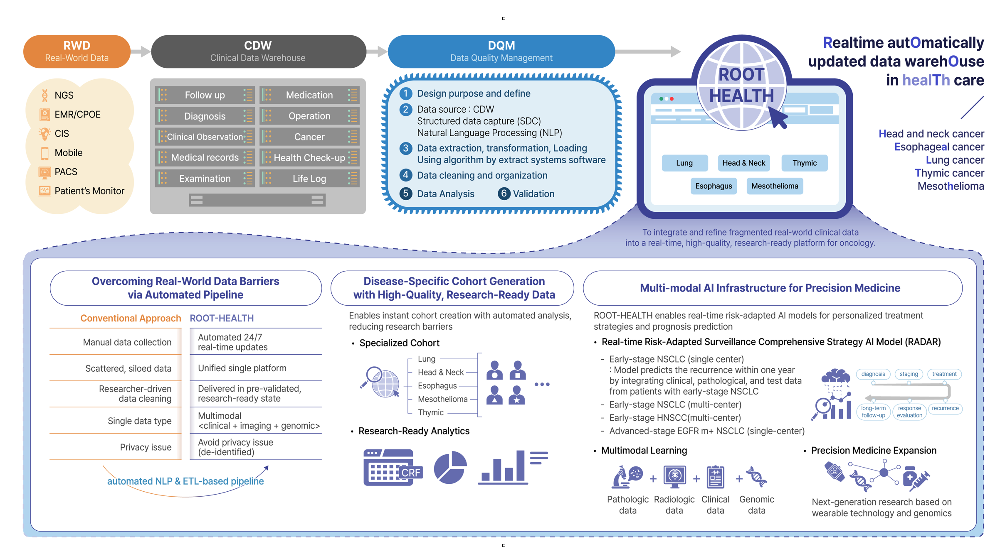

ROOT HEALTH
What is ROOT HEALTH?
ROOT HEALTH is a research-ready oncology data platform that integrates longitudinal real-world clinical information for cancer research. It brings together registry information, patient characteristics, follow-up and outcomes, diagnosis and staging, molecular testing, treatment history, imaging, outpatient follow-up, and laboratory data.
The current NSCLC cohort includes patients who received cancer-directed treatment at Samsung Medical Center and is designed to support longitudinal, multimodal clinical research and AI development.
ROOT HEALTH Platform
ROOT HEALTH organizes routinely generated real-world data into a research-ready infrastructure for disease-specific cohort generation, longitudinal analysis, and multimodal AI research.

ROOT HEALTH platform overview.
Data at a Glance
Key data volumes currently available in the ROOT HEALTH NSCLC cohort.
Excluding stage 0; patients received cancer-directed treatment at SMC.
Chest CT 500,919 · Brain MRI 117,756 · PET 73,637
38,154 patients with OPD follow-up · mean 34.0 visits/patient
Tests performed after NSCLC diagnosis; 37,920 patients · mean 439.1 tests/patient
Data Available in ROOT HEALTH
Explore the major data components summarized in the current ROOT HEALTH clinical-variable workbook. Each section will be presented on a separate page with the original variables and counts organized into readable tables.
Data cutoff: September 18, 2026.